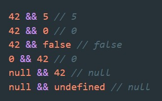

Операторы || и && выполняют логическую проверку первого операнда. Если операнд не относится к типу boolean, происходит преобразование к ToBoolean для выполнения проверки.
Что касается оператора ||, если условие истино, то результатом выражения || становится значение первого первого операнда. Если же условие ложно, то результатом выражения || становится значение второго операнда.
И наоборот, для оператора &&, если условие истинно, то результатом выражения && становится значение второго операнда. Если же условие ложно, то результатом выражения && становится значение первого операнда.
Операторы && и || не возращают булевое значение, они всегда возвращают один из оперантов
Рассмотрим пример
Что будет результатом в этом случае (false или 42)? как нужно рассматривать это выражение?
Здесь все просто если значть, что у оператора && больший приоритет чем у ||. Поэтому наш пример надо рассматривать как второй вариант, т.е. результатом этого выражения будет 42